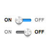
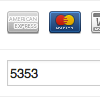
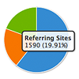

UX LAB
-

jQuery-UI.toggleSwitch()
Yet another toggle switch, but built upon jQuery UI. It therefore respects your default theme styling and requires the smallest CSS & JS additions.
-
Idle jGrowl Rerouting
Paul Irish wrote a pretty chill script for detecting when users become inactive. Here's an example of the good user experience stuff you can do with it; queuing up jGrowl notifications if a user isn't paying attention.
-

Credit Cards
Everyone should be able to have nice credit card forms. This snippet auto-detects the credit card type (Amex/VISA/Mastercard) depending upon the number you enter. No more silly drop downs or radio buttons.
-

Google Analytics Highcharts
This experiment stems from a Hacker News argument about Google's reluctance to ditch Flash for their analytics interface. There really is no reason to stick with Flash, and it's just hurting their device accessibility.
-
Duck Hunt
Something I made for fun about 6 months ago to play with CSS3 perspectives. I never really uploaded it anywhere nor showed many people.